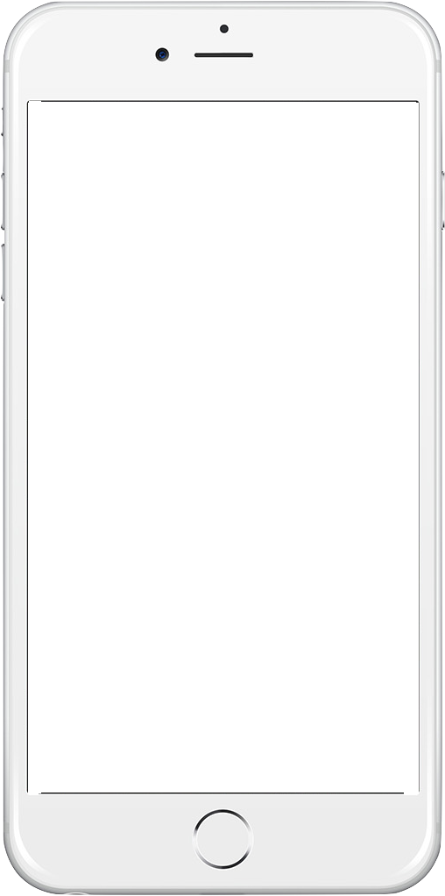
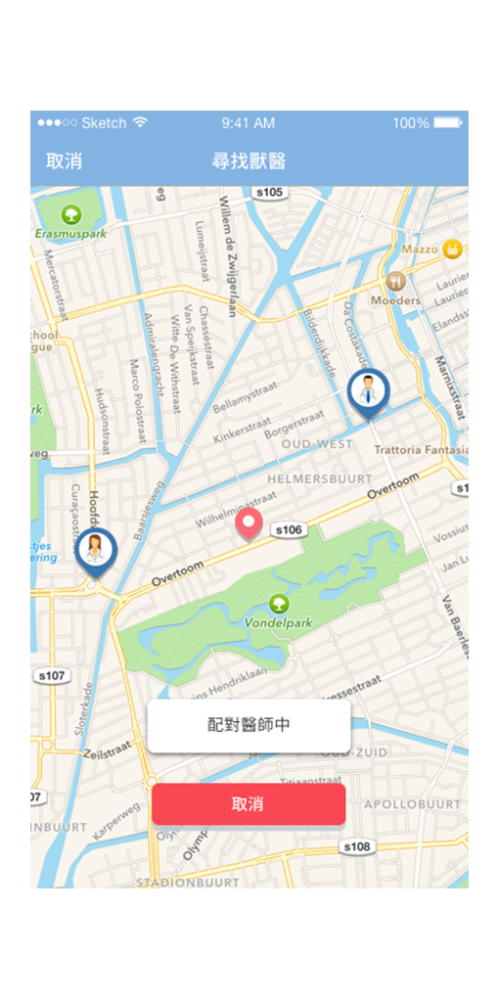
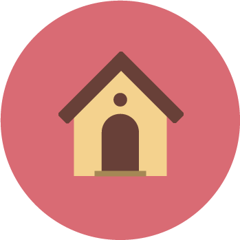

APP
醫師
特色
聯絡
 
半夜找不到獸醫? Velp 提供您最即時的專業獸醫服務
執業獸醫24HR視訊問診，並可在線上立即尋找最近的獸醫到府提供緊急醫療協助，讓您的寵物即時接受專業醫療，同時減輕您舟車勞頓的時間與金錢！
無論何時何處，我們為您服務
Velp 的獸醫來自各地，皆具有合格獸醫師執照及豐富的臨床經驗，在凌晨時段也有醫師排班，讓您的寵物能夠被時時守護
即時諮詢，雲端病歷，持續追蹤
即時視訊諮詢，讓獸醫能快速掌握寵物狀況，提供您最專業的協助。
同時建立雲端病歷，讓看診資訊更透明
在獸醫到府服務後，您可持續在Velp平台上與獸醫互動，即時掌握病情

我是寵物主人
獲取免費試用機會!
合作醫師募集中！
我有興趣
Ｑ＆Ａ 我有問題！